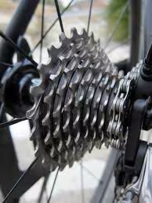
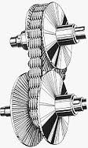

For instant, seamless response to changing conditions, the redesigned Lineartronic Continuously Variable Transmission
elevates
efficiency of the BOXER engine and Symmetrical AWD by keeping the engine in its ideal power range.
Featuring a reinforced
transmission case and new torque converter, Lineatronic delivers a smoother
while also reducing mechanical noise during
operation. Adaptive control automatically shifts to the most optimal
gear to suit any driving style and road condition, while
a stepped variable control is in tune with changes in engine speed,
maximising drivability and performance.
Lineartronic is designed for linear response, and of course predictable driving means more fun behind the wheel. Yet
there is
more than simply selecting the most appropriate gear ratio. Another advantage of CVT is that it allows the engine to
operate
longer at a lower speed than conventional automatic transmission systems. A lower engine speed means
better fuel economy. And
CVTs also deliver a smoother ride, as it eliminates shocks when changing gears, and
allows the engine to run quieter.
Regular Transmission
This is what your bicycle looks like:
distinct gear. A regular transmission
uses the same principle, switching
between fixed gears
Regular transmission cutaway--
See the fixed gears?
Lineartronic CVT
Subaru's continuously variable
transmission uses a steel chain connecting
pulleys that vary in width, with no
fixed gears.
Lineartronic CVT cutaway--
just pulleys that vary their width.
First of all, how does a regular transmission with gears work?
Remember the ten-speed bicycle you rode as a teen? On the back wheel, there were different size gears. A human can only pedal so fast, and with so much power, so to make the most of your effort you used different gears for different speeds. Uphill, when you needed all your power at a slow speed, you used the wide gear. Downhill, when you were already cruising fast, you needed the narrow gear to go even faster. Traditional transmissions in vehicles employ the same principle. The transmission shifts gears to provide the most appropriate ratio for a given situation: lowest gears for starting out, middle gears for acceleration and passing, and higher gears for fuel-efficient cruising. Most vehicles with conventional gears have four or five different speeds.
How does the CVT compare to a regular geared transmission?
The controls are the same inside the car: two pedals (no clutch) and a P-R-N-D-L-style shift pattern. But instead of gears, the CVT has two pulleys that can vary in width, and a steel belt that connects them. By getting narrower or fatter, these pulleys change the relationship of engine speed to car speed. And because these pulleys can vary their width infinitely, they are "continuously variable." When driving a car with a CVT, you never hear or feel the transmission shift -- it simply raises and lowers the engine speed as needed , calling up higher engine speeds (or RPM) for better acceleration and lower RPM for better fuel economy while cruising.
What does a CVT feel like when driving?
Many people don't notice the difference. Modern cars with regular transmissions shift so smoothly that you don't really feel the gears changing. You may notice a difference if you pay close attention. With a CVT, there are no gears, period, so you hear the engine rev when you press the accelerator but you never feel any power interruption as the gears change. The engine finds its power band, and the transmission keeps the gear ratios married to that sweet spot for maximum power and fuel efficiency.